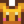

Rabbit's Foot
| Rabbit's Foot | |||||||||||||||||||||||
| Some say it's lucky. | |||||||||||||||||||||||
| Information | |||||||||||||||||||||||
| Source |
|
||||||||||||||||||||||
|
|||||||||||||||||||||||
The Rabbit's Foot is an animal product obtained from a Rabbit with sufficient friendship, mood, and daily luck. It can also occasionally be purchased from the Traveling Cart for  1,695–2,825g or dropped by Serpents in the Skull Cavern (0.8% chance). One may be purchased from Jas in her shop at the Desert Festival for
1,695–2,825g or dropped by Serpents in the Skull Cavern (0.8% chance). One may be purchased from Jas in her shop at the Desert Festival for  100 Calico Eggs. It can also be gifted by a pet cat with max friendship.
100 Calico Eggs. It can also be gifted by a pet cat with max friendship.
Luck buffs do not influence the chances of getting a Rabbit's Foot. Despite the description, carrying a Rabbit's Foot does not increase the player's luck.
Gifting
| Villager Reactions
| |
|---|---|
| Love | |
| Hate | |
Bundles
Rabbit's Foot is used in the  Enchanter's Bundle on the Bulletin Board.
Enchanter's Bundle on the Bulletin Board.
Recipes
Rabbit's Foot is not used in any recipes.
Tailoring
Rabbit's Foot is used in the spool of the Sewing Machine to create a 
Quests
Rabbit's Foot is not used in any quests.
Other Uses
- One Rabbit's Foot is used when solving the puzzle depicted in Secret Note #20.
- Having a Rabbit's Foot in inventory prevents a negative outcome in the Group 10-Heart Event.
History
- 1.0: Introduced.
- 1.1: Increased value from 450g to 565g.
- 1.3.27: Required to solve secret note #20. Can be used in group 10-heart event.
- 1.4: Can now be used in Tailoring.
- 1.6: Can now be gifted by a pet cat with max friendship. Now obtainable during Desert Festival.
| Animals and Produce | |
|---|---|
| Coop | Chicken (Egg • Large Egg • Brown Egg • Large Brown Egg) • Dinosaur (Dinosaur Egg) • Duck (Duck Egg • Duck Feather) • Golden Chicken (Golden Egg) • Rabbit (Wool • Rabbit's Foot) • Void Chicken (Void Egg) |
| Barn | Cow (Milk • Large Milk) • Goat (Goat Milk • Large Goat Milk) • Sheep (Wool) • Ostrich (Ostrich Egg) • Pig (Truffle) |
| Fish Pond | Fish (Roe) |
| Slime Hutch | Slimes (Slime • Slime Ball • Slime Egg) |
| Other | Cat • Dog • Horse • Turtle |